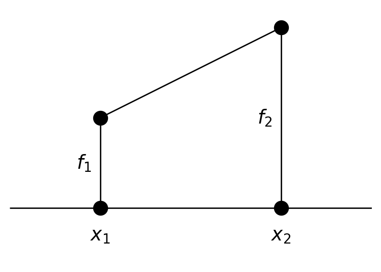
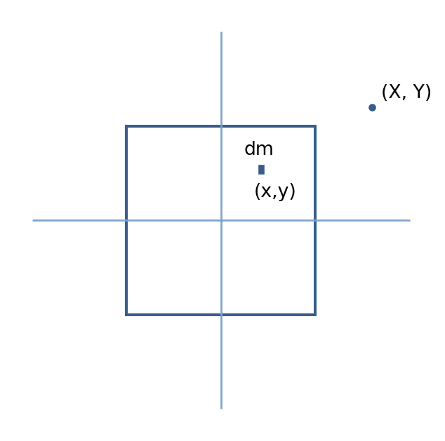
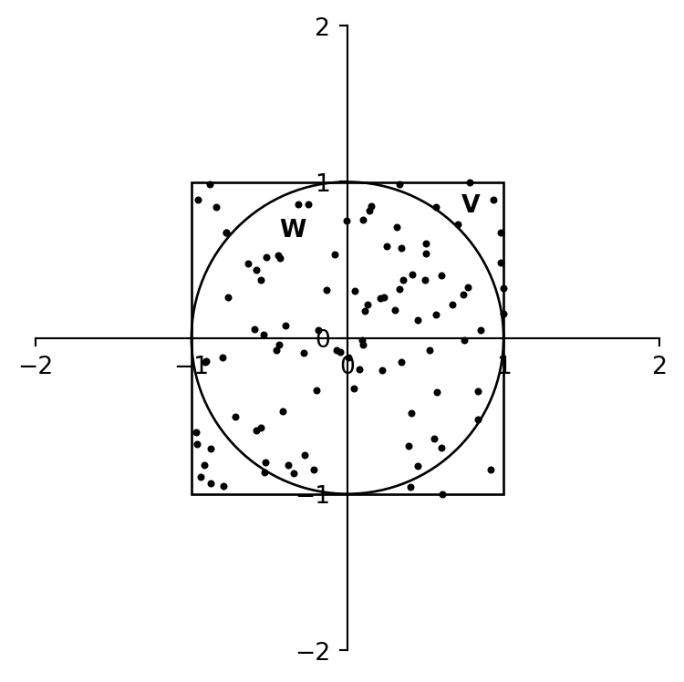

7 Numerical Integration
7.1 Elementary Algorithms
Let us suppose we are confronted with a function \(f(x)\) tabulated at the points \(x_1, x_2, x_3, \ldots, x_n\), not necessarily equally spaced. We require the integral of \(f(x)\) from \(x_1\) to \(x_n\). How do we proceed? The simplest algorithm we can use, valid both for equally and unequally spaced points, is the trapezoidal rule. The trapezoidal rule assumes that the function is linear between the tabulated points. With this assumption, it can be seen that the integral from \(x_1\) to \(x_2\) is given by
\[ \int_{x_1}^{x_2} f(x)\,dx \approx \frac{h}{2}(f_1 + f_2) \]
where \(h = x_2 - x_1\).
This equation can be extended to \(n\) points.
For equally spaced points
\[ \int_{x_1}^{x_n} f(x)\,dx \approx h \left(\frac{1}{2} f_1 + f_2 + f_3 + \ldots + \frac{1}{2} f_n \right) \tag{1} \]
and
\[ \int_{x_1}^{x_n} f(x)\,dx \approx \frac{1}{2}\bigl( (x_2 - x_1)(f_1 + f_2) + (x_3 - x_2)(f_2 + f_3) + \ldots + (x_n - x_{n-1})(f_{n-1} + f_n) \bigr) \]
for unevenly spaced points.
NoteExercise 7.1
Use the trapezoidal rule to evaluate the integral
\[ \int_{1}^{2} x \sin x\, dx \]
with 10 points. Double the number of points and re-evaluate the integral. The “exact” value of this integral is 1.440422. Rewrite your program to evaluate the integral at an arbitrary number of points input by the user. Are 1000 points better than 100 points?
For equally spaced points, the trapezoidal rule has an error \(O(h^3)\), which means that the error for each interval in the rule is proportional to the cube of the spacing. This means, of course, that if the interval size is reduced, the error decreases. In terms of the total number of points (\(N\)) used, the total error for the trapezoidal rule can be expressed as \(O(1/N^2)\) — i.e., if we double the number of points, the error goes down by a factor of 4. Eventually, however, we run into the law of diminishing returns — either we hit the limit of machine accuracy, or the cumulative error involved in using many tiny intervals begins to build and becomes unacceptably high. In addition, if we use very small intervals, we pay dearly in computer time for the many function evaluations. If the function is complex and thus expensive to compute, this can become prohibitive.
Despite these disadvantages, the trapezoidal rule is adequate for most applications, and it is the only choice if your function is tabulated at unequally spaced points. For those applications which require more accuracy than the trapezoidal rule permits, or which are attempting to integrate very complex functions, “higher order” integration schemes are available. The most popular is Simpson’s rule which is based on parabolic interpolation. The formula for Simpson’s rule, a three-point formula, is:
\[ \int_{x_1}^{x_3} f(x)\,dx \approx \frac{h}{3} \left( \frac{1}{3}f_1 + \frac{4}{3}f_2 + \frac{1}{3}f_3 \right) + O(h^5) \tag{2} \]
The “extended” version of this formula over \(N\) steps (note that \(N\) must be odd) is:
\[ \int_{x_1}^{x_N} f(x)\,dx \approx \frac{h}{3} \big( f_1 + 4f_2 + 2f_3 + 4f_4 + \ldots + 2f_{N-2} + 4f_{N-1} + f_N \big) + O\left(\frac{1}{N^4}\right) \]
NoteExercise 7.2
Calculate the integral of Exercise 7.1 with Simpson’s rule using 9 points in the interval \((1,2)\), and then repeat the exercise with 19 points. Compare with the results from Exercise 7.1 for 10 and 20 points respectively.
Note that if you have a tabulated function with an even number of points, you can still use Simpson’s rule. Simply evaluate the integral over the first interval using the trapezoidal rule and then use Simpson’s rule for the remaining odd number of points.
Even higher-order formulae can be used to carry out numerical integration, but in practice, these are hardly ever used. There are advanced techniques, which we will not go into, that can extract virtually any desired precision from the trapezoidal and Simpson’s rules. Thus, it is hardly ever necessary to utilize higher-order formulae.
NoteExercise 7.3
To explore one of these “advanced techniques”, go back to the program you wrote for Exercise 7.1 and rewrite it to calculate the value of the integral with \(N = 30\) and \(N = 80\) points. Setting \(x = 1/N^2\) and \(y =\) the value of the integral for each value of \(N\) defines two points. The program should find the equation of the line between these two points. The y-intercept of this equation should be a very accurate approximation to the integral. Why? Since \(x = 1/N^2\)1, the y-intercept (where \(x = 0\)) corresponds to \(N = \infty\). The program should print out the value of the integral and its deviation from the “exact” value 1.440422 for \(N = 30\), \(80\), and “\(\infty\)” points.
7.2 Gaussian Integration
In the previous section, we found that we could obtain significantly higher accuracy in numerical integration using the same number of points in a given interval by changing the weighting used for the points. For instance, in trapezoidal integration, each point (except for the end points) enters into the formula (Equation 1) with equal weights. In Simpson’s rule (Equation 2) the points are not given equal weights. Note that the odd abscissas are given weights of \(2/3\), whereas the even abscissas are given weights of \(4/3\).
It turns out that if we relax the restriction that the abscissas should be evenly spaced in the interval, we can then choose abscissas and corresponding weights that yield very high accuracies. This is the basis of Gaussian integration. We do not have the time to go into this method in great detail, but it is important that you are at least acquainted with this method of integration, as it is commonly and widely used.
Gaussian integration is based on integrals of the form
\[ \int_a^b W(x)\, f(x)\, dx \]
which can be approximated by the sum
\[ \sum_{i=1}^{N} w_i\, f(x_i) \]
The weights (\(w_i\)) and the abscissas (\(x_i\)) can be chosen, for a given \(W(x)\), to make the approximation exact if \(f(x)\) is a polynomial. If \(f(x)\) can be “well approximated” by a polynomial, then the integration formula above yields very high accuracy. Different \(W(x)\)’s, of course, lead to different choices for the abscissas and weights.
For example:
- \(W(x) = 1\) leads to Gauss–Legendre integration
- \(W(x) = (1 - x^2)^{-1/2}\) leads to Gauss–Chebyshev integration
We will concentrate here on the simplest and most useful case, Gauss–Legendre integration.
For a given number of abscissas, it is possible to compute the \(x_i\)’s and the \(w_i\)’s for Gauss–Legendre integration. We won’t go into how this is actually done; details can be found in Numerical Recipes. Below is a table listing the abscissas and weights for several values of \(N\). These abscissas are based on the interval \([-1, 1]\):
| N | \(x_i\) | \(w_i\) |
|---|---|---|
| 2 | ±0.57735 | 1.000000 |
| 3 | 0 | 0.888889 |
| ±0.774597 | 0.555556 | |
| 4 | ±0.339981 | 0.652145 |
| ±0.861136 | 0.347855 | |
| 5 | 0 | 0.568889 |
| ±0.538469 | 0.478629 | |
| ±0.90618 | 0.236927 |
If your integration is not over the limits \([-1, 1]\), then the abscissas must be transformed accordingly. For an interval \([a, b]\), the new abscissas \(t_i\) are given by:
\[ t_i = \frac{a + b}{2} + \frac{b - a}{2} x_i \]
and note that
\[ dt = \frac{b - a}{2} dx \]
Hence,
\[ \int_a^b f(t)\, dt = \int_{-1}^{1} f\!\left(\frac{a + b}{2} + \frac{b - a}{2} x \right) \frac{b - a}{2}\, dx \]
Thus,
\[ \int_a^b f(t)\, dt \approx \frac{b - a}{2} \sum_{i=1}^{N} w_i\, f\!\left( \frac{a + b}{2} + \frac{b - a}{2} x_i \right) \]
where the weights and abscissas are as displayed in the table above, and we are assuming that \(W(x) = 1\).
NoteExercise 7.4
Repeat Exercise 7.1 using Gauss–Legendre integration with 5 abscissas. Compare the accuracy with your results from Exercises 7.1 and 7.2.
7.3 Multidimensional Integrals
Numerical integrations of functions of several variables over regions with dimensions greater than one are very difficult to carry out. First, to get sufficient precision, the numerical integration may involve literally tens of thousands of function evaluations. Second, if the boundary of the integration region is complex, this can greatly complicate the procedure. Thus, if possible, before resorting to multidimensional techniques, try to reduce the dimension of your integral. Sometimes this may be done by exploiting the symmetries of the integrand. For instance, if you are integrating a spherically symmetric function over a spherical region, switch to spherical coordinates. The integral will reduce to a one-dimensional integral! If this does not work, and the function is otherwise fairly well behaved (for instance, is not strongly peaked in a certain region), and you don’t require great accuracy, explore Monte Carlo techniques (see Section 7.4). Otherwise, a multidimensional integral can be attacked using one-dimensional techniques in the following way:
Let us suppose we have the following integral:
\[ I = \int_{x_1}^{x_2} dx \int_{y_1(x)}^{y_2(x)} dy \int_{z_1(x, y)}^{z_2(x, y)} f(x, y, z)\, dz \]
where the limits on the integrals define the region of integration in the usual way. If we let
\[ G(x, y) = \int_{z_1(x, y)}^{z_2(x, y)} f(x, y, z)\, dz \]
and
\[ H(x) = \int_{y_1(x)}^{y_2(x)} G(x, y)\, dy \]
then
\[ I = \int_{x_1}^{x_2} H(x)\, dx \]
The third integral for \(I\) can be evaluated using one of the one-dimensional techniques discussed in §7.1. However, in this procedure \(H(x)\) will have to be evaluated at a number of values of \(x\), and this must be done by integrating \(G(x, y)\) again using a one-dimensional technique for each of those values of \(x\). \(G(x, y)\), however, can only be evaluated by carrying out the first integral for each value of \(x\) and \(y\) encountered in the evaluation of the second and third integrals. Thus, while the third integral is evaluated only once, the second integral is evaluated many times and the third integral many, many times leading to a great number of function evaluations.
Example
Evaluate the integral
\[ \int_{-1}^{1} dx \int_{-\sqrt{1 - x^2}}^{\sqrt{1 - x^2}} (x^2 + y^2)\, dy \]
using two applications of the trapezoidal method. Note: This integral can be reduced to a single integral in polar coordinates. The exact value of this integral is \(\pi / 2 = 1.570796\). Here is some code that will do the job:
/*
Functions employed:
trap: carries out 1-D trapezoidal integration
integrand: evaluates the integrand
l1, l2: the limits
twoDtrap: implements 2-D trapezoidal integration
H: Carries out integration of the integrand for a given value of x
x: to make things easy, x is declared as an external variable, so that
we don’t have to pass it to each function
*/
#include <stdio.h>
#include <math.h>
double trap(double a, double b, double (*func)(double), int N);
double integrand(double y);
double l1();
double l2();
double twoDtrap(double a, double b,int N);
double H(double y1, double y2);
double x;
int N;
int main()
{
double a = -1.0;
double b = 1.0;
double result;
printf("\nEnter number of points for both x and y > ");
scanf("%d",&N);
result = twoDtrap(a,b,N);
printf("\nIntegral = %e\n",result);
return(0);
}
/* twoDtrap carries out trapezoidal integration on H between the limits
y1 = l1(x), y2 = l2(x) and x = a and x = b */
double twoDtrap(double a, double b, int N)
{
double h,integral;
int i;
h = (b-a)/(double)(N-1);
integral = 0.0;
x = a;
integral += 0.5*H(l1(),l2());
x = b;
integral += 0.5*H(l1(),l2());
x = a+h;
for(i=2;i<N;i++) {
integral += H(l1(),l2());
x += h;
}
integral *= h;
return(integral);
}
double H(double y1, double y2)
{
return(trap(y1,y2,integrand,N));
}
/* Remember that x is external, so it need not be passed to l1 and l2 */
double l1()
{
return(-sqrt(1-x*x));
}
double l2()
{
return(sqrt(1-x*x));
}
/* Only y is passed to integrand, as x is external */
double integrand(double y)
{
return(x*x + y*y);
}
/* Note that trap is written generally, so that any function (func) can
be passed to it. Study carefully how a function is passed to another
function, and how the passed function is referred to inside the second
function. Note that in this case, only one variable can be passed to
func in this case y. */
double trap(double a, double b, double (*func)(double), int N)
{
double h,integral,x;
int i;
if(a == b) return(0.0);
h = (b-a)/(double)(N-1);
integral = 0.0;
integral += 0.5*((*func)(a) + (*func)(b));
x = a+h;
for(i=2;i<N;i++) {
integral += (*func)(x);
x += h;
}
integral *= h;
return(integral);
}
NoteExercise 7.5
Evaluate the integral
\[ \int_{-1}^{1} dx \int_{-\pi/2}^{\pi/2} x^2 \cos y\, dy \]
using two applications of the trapezoidal method. The exact value of this integral is \(4/3\).
NoteExercise 7.6

The gravitational potential at a point \((X, Y)\) due to an infinitesimal mass element \(dm\) at position \((x, y)\) is given by
\[ dV = -G \frac{dm}{r} \]
where \(r\) is the distance between \((x, y)\) and \((X, Y)\). Calculate the gravitational potential \(V\) for the square mass shown in the figure above at the point \((X, Y)\), which lies in the plane of the square and outside of it, by integrating the above expression for \(dV\) over the mass. Note that the surface density \(\sigma\) of the square is a function of position: \(\sigma = (x^2 + y^2)\ \text{kg/m}^2\) and that \(dm = \sigma\, dx\, dy\) The square has dimensions \(2\,\text{m} \times 2\,\text{m}\) and is centered on the origin. Prompt the user for the \((X, Y)\) coordinates, and reprompt if \((X, Y)\) lies inside the square.
7.4 Monte Carlo Integration
This technique of numerical integration is named after the famous casino in Monte Carlo not because it is risky or chancy, but because it uses random numbers to carry out an integration. How does this work? Suppose we have an integral of a function \(f\) over a given volume \(V\), and we choose \(N\) random points in that volume. Then,
\[ \iiint_V f\,dV \approx V \langle f \rangle \pm V \sqrt{\frac{\langle f^2 \rangle - \langle f \rangle^2}{N}} \tag{3} \]
where \(\langle f \rangle\) is the arithmetic mean of \(f\) over the \(N\) random points:
\[ \langle f \rangle = \frac{1}{N} \sum_{i=1}^{N} f(x_i) \]
and
\[ \langle f^2 \rangle = \frac{1}{N} \sum_{i=1}^{N} f^2(x_i) \]
Note that the error term in equation (3) is proportional to \(1/\sqrt{N}\), which is one of the great disadvantages of the Monte Carlo method of numerical integration; the error reduces very slowly with increasing \(N\), and thus many random points are needed for high accuracy. Nonetheless, Monte Carlo integration is sometimes “the only way to go”, especially if the region of integration is complicated.
Before we proceed any further with Monte Carlo integration, we should discuss in a bit more detail the generation of random numbers by a computer. All “C” compilers come with a pair of library routines.
void srand(unsigned seed);
int rand(void);The rand function is the actual random number generator, but the random number generator must be initialized by srand by supplying srand with an arbitrary unsigned integer, the seed. Note that the same initializing value of “seed” will always return the same random number sequence. The function rand returns, upon each call, a random number in the range 0 to the largest positive value the computer can produce for variables of type int; this number is available in stdlib.h as RAND_MAX. Thus, if we want a random floating point number in the range 0.0 – 1.0 we can use the code fragment:
x = (float)rand()/(RAND_MAX+1.0);Unfortunately, rand is not a good enough random number generator, even for government work. It does not give truly random sequences, and this can be fatal for Monte Carlo integrations. It is much better to use the function float ran1(long *idum) (see Numerical Recipes for details). This function is available in comphys.c and defined in comphys.h and, as we saw in Chapter 2, should be initialized by setting idum to a negative number, thus:
long idum;
float rn;
/* Initialize ran1 */
idum = -1;
rn = ran1(&idum);
/* Use ran1 */
rn = ran1(&idum);The function ran1, which returns a random floating point number between 0.0 and 1.0 is good enough for government work and is much superior to rand. Note, however, that if you use the same negative number seed idum each time, you will get the same sequence of random numbers. It is thus better to use the scheme outlined in Chapter 2 to set idum = -1*now, where now is a time variable.
Now, back to Monte Carlo integration. Suppose we want to integrate a function \(g\) over an irregular region \(W\) that is difficult to sample randomly. What do we do? We find a region \(V\) that contains \(W\) and which is easy to sample randomly — say, for instance, a rectangle or a cube. We then define \(f = g\) at points inside of \(W\) but \(f = 0\) at points inside of \(V\) but outside of \(W\). It is in our own interest to make \(V\) fit around \(W\) as snugly as possible, as the zero values of \(f\) will increase the factor \(\langle f^2 \rangle - \langle f \rangle^2\) in the error term of equation (3) and will reduce the effective value of \(N\).
For an example, let us take the integral in the example in §7.3. The region of interest \(W\) is a circle with radius 1 and center at \((0,0)\). We take the region \(V\) to be a square with the same center. The Monte Carlo integration is carried out by the following code:
#include <stdio.h>
#include <stdlib.h>
#include <time.h>
#include "comphys.h"
#include "comphys.c"
#define N 100
int main()
{
float x,y,rn,r2,f,integral,V,sum,av,sum2,av2;
float error;
long i;
long idum = -1;
time_t now;
/* Use the time function to supply a different seed to the
random number generator every time the program is run */
now = time(NULL);
idum = -1*now;
/* Initialize random number generator */
rn = ran1(&idum);
/* Our region V that encloses W, a circle of unit radius,
is a square with sides of length 2. Thus, the area of
this square is 4 */
V = 4.0;
sum = 0.0;
sum2 = 0.0;
for(i=0;i<N;i++) {
/* Following gives x and y between -1.0 and 1.0 */
x = 2.0*ran1(&idum) - 1.0;
y = 2.0*ran1(&idum) - 1.0;
r2 = x*x + y*y;
/* Is the point in the region W? */
if(r2 <= 1.0) f = r2;
else f = 0.0;
/* Evaluate sums */
sum += f;
sum2 += f*f;
}
/* Calculate Integral and error */
av = sum/(float)N;
av2 = sum2/(float)N;
integral = av*V;
error = V*sqrt((av2-av*av)/(float)N);
printf("\nIntegral = %f +/- %f\n",integral,error);
return(0);
}The result of the first 10 runs of this program (your numbers will be different) with \(N = 100\) are: 1.825, 1.640, 1.414, 1.700, 1.532, 1.571, 1.413, 1.600, 1.519, 1.745 each with a calculated error of about \(\pm 0.130\). The mean of these determinations is \(1.596 \pm 0.043\) (where the error is the standard error of the mean). If we increase \(N\) to 1000, we get the following run: 1.593, 1.574, 1.614, 1.589, 1.545, 1.531, 1.592, 1.570, 1.627, 1.579 each with a calculated error of about \(\pm 0.042\). The mean of these determinations is \(1.581 \pm 0.009\).

Notice that increasing \(N\) by a factor of 10 decreased the error by a factor of only about 3. A single run with \(N = 100000\) gives \(1.575 \pm 0.004\). Recall that the exact value of this integral is \(\pi/2 = 1.571\).
The moral of the story is — run your Monte Carlo program many times as the individual results are scattered around the true value.
NoteExercise 7.7
Use Monte Carlo integration to evaluate the integral in Exercise 7.5. The program should prompt the user for N, the number of random points used in the integration.
NoteExercise 7.8
Using Monte Carlo integration, find the center of mass of a 2-D right triangle with base of length 1 and height of length 2. With the right angle positioned at \((0,0)\), the density varies as \(\rho = y \sin x^2 + 2\). Recall that the center of mass of a planar object is given by
\[ X = \frac{1}{M} \iint x \rho\, dS \]
\[ Y = \frac{1}{M} \iint y \rho\, dS \]
where
\[ M = \iint \rho\, dS \]
NoteExercise 7.9
Repeat the problem of Exercise 7.6 using Monte Carlo integration.
NoteExercise 7.10
The Ising Model: Monte Carlo methods may be used in applications other than integration. Consider the following from atomic physics. An Ising chain is a 1-D array made of \(N\) particles with spin. The spin (\(s\)) of an individual particle can be either up (+1) or down (-1), and the total energy of the chain is given by
\[ E = -J \sum_{i=1}^{N-1} s_i s_{i+1} \]
The energy is a minimum when all the spins are the same. Consider an event that randomly flips the spin of one of the particles in the array. Thermodynamically, if that change results in a lower energy, it is highly probable. If the change results in a higher energy, it will have a probability given by the Boltzmann distribution
\[ R = \exp(-\Delta E / kT) \]
Write a program that will implement the following algorithm:
Generate a trial spin configuration consisting of \(N\) particles with random spins \(s_i\).
Pick a particle \(j\) randomly, flip its spin, and calculate the resulting new energy \(E_{\text{new}}\).
Accept the new configuration if \(E_{\text{new}} \le E_{\text{old}}\). If \(E_{\text{new}} > E_{\text{old}}\), then assign a relative probability \(R\) given by the above equation. Generate a random number \(0 < r < 1\). If \(R > r\) accept the new configuration. If not, restore the old configuration as the accepted configuration and go back to step 2.
The above steps 2 → 3 should be incorporated into a for loop which will run from l=1 to 5000. Print out l and the energy resulting from the configuration decided upon in step 3 for each passage through the loop. Take the following values for the constants: \(N = 50\), \(J = 2.0\), \(k = 0.001\). Use Gnuplot to plot out \(l\) versus \(E\). Note that for low temperatures (\(T < 1000\)), the system rapidly declines in energy and reaches equilibrium within the 5000 iterations. For high temperatures, the energy simply fluctuates and does not reach equilibrium. The Ising model can be used to simulate many quantum physical systems. One example is magnetism. In a ferromagnetic material, individual atoms have a net magnetic moment. Magnetization will occur when those magnetic moments line up, and this represents the minimum energy configuration. In the presence of an external magnetic field, a macroscopic sample of the material can be magnetized, but as the temperature increases, the alignment of the magnetic moments becomes more chaotic. At sufficiently high temperatures, no magnetization will occur.
Why do we set \(x = 1/N^2\)? Because the error in the trapezoidal method goes as \(O(1/N^2)\), and thus the error in the determination of the integral should scale linearly with \(1/N^2\).↩︎